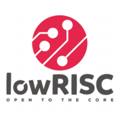

Katie Lim
I am a PhD candidate in the school of Computer Science and Engineering at the University of Washington. My research interests are in computer architecture and operating systems with a focus on heterogeneous architectures. I also enjoy open-source hardware projects and have contributed to OpenPiton and lowRISC.
Education
 Ph.D, Computer Science and Engineering (2018-)
Ph.D, Computer Science and Engineering (2018-)
University of Washington, WA
Advisors: Prof. Tom Anderson, Prof. Baris Kasikci
 BSE, Computer Science (2014-2018), Summa cum Laude
BSE, Computer Science (2014-2018), Summa cum Laude
Princeton University, NJ
Latin Salutatorian
Senior Thesis Advisor: Prof. David Wentzlaff
Experience

lowRISC, Cambridge, UK (Summer 2017)
Research Intern
Advisor: Dr. Robert Mullins
Microsoft, Seattle, WA (Summer 2016)
Explorer Intern
Publications
-
Apiary: An OS for the Modern FPGA
K. Lim, M. Giordano, I. Zhang, B. Kasikci, and T. Anderson
The ACM SIGOPS 20th Workshop on Hot Topics in Operating Systems (HotOS), May 2025 -
Accelerator Interfacing is Like an Onion
K. Lim, J. Balkind
Workshop on Languages, Tools, and Techniques for Accelerator Design (LATTE) @ ASPLOS 2025, March 2025 -
Beehive: A Flexible Network Stack for Direct-Attached Accelerators
K. Lim, M. Giordano, T. Stavrinos, I. Zhang, J. Nelson, B. Kasikci, and T. Anderson
57th IEEE/ACM International Symposium on Microarchitecture (MICRO), November 2024 -
(Please Build) an Accelerator Zoo
K. Lim, M.Giordano, J. Balkind
Workshop on Languages, Tools, and Techniques for Accelerator Design (LATTE) @ ASPLOS 2024, April 2024 -
BYOC: A "Bring Your Own Core" Framework for Heterogeneous-ISA Research
J. Balkind, K. Lim, F. Gao, M. Schaffner, G. Chirkov, A. Li, A. Lavrov, T. Nguyen, Y. Fu, F. Zaruba, K. Gulati, L. Benini, and D. Wentzlaff International Conference on Architectural Support for Programming Languages and Operating Systems (ASPLOS), March 2020 -
JuxtaPiton: Enabling Heterogeneous-ISA Research with RISC-V and SPARC FPGA Soft-cores
K. Lim, J. Balkind, and D. Wentzlaff
2019 International Symposium on Field-Programmable Gate Arrays (FPGA '19)
arxiv paper
OpenPiton Blog post -
Power and Energy Characterization of an Open Source 25-core Manycore Processor
M. McKeown, A. Lavrov, M. Shahrad, P. Jackson, Y. Fu, J. Balkind, T. Nguyen, K. Lim, Y. Zhou, and D. Wentzlaff
24th IEEE International Symposium on High-Performance Computer Architecture (HPCA '18) -
Building and Evaluating a Heterogeneous ISA Multiprocessor System Utilizing the OpenPiton Framework
Senior Thesis, Princeton University
Advisor: Prof. David Wentzlaff
Awards & Honors
- NSF Graduate Research Fellow - National Science Foundation (2018 - 2023)
- ARCS Fellow - ARCS Foundation (2018-2021)
- Marilyn Fries Endowed Regental Fellowship - University of Washington (2018)
- Outstanding Computer Science Senior Thesis Prize - Princeton University (2018)
- Phi Beta Kappa - Princeton University (2017)
- Accenture Prize in Computer Science - Princeton University (2017)
- Tau Beta Pi - Princeton University (2016)
- Shapiro Prize for Academic Excellence - Princeton University (2015)
Contact Info
-
Email
katielim@cs.washington.edu -
Social